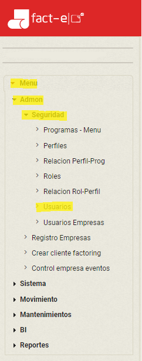
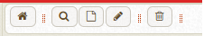
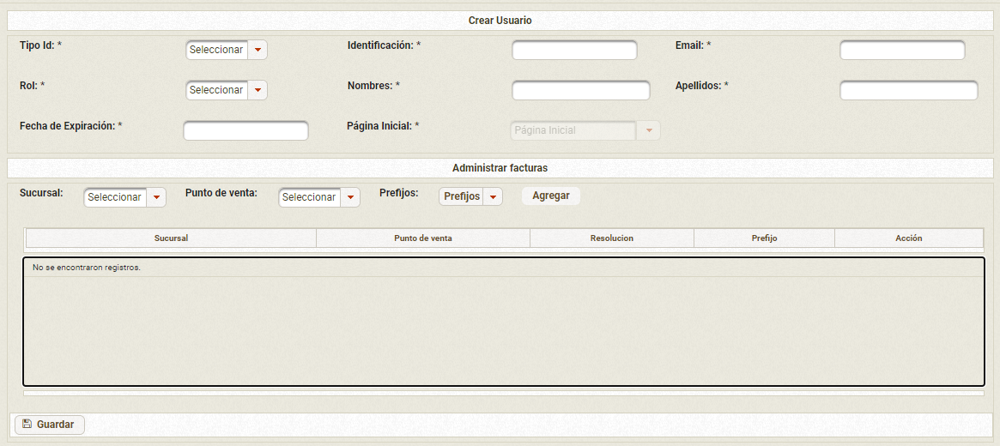
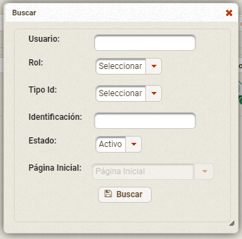

Como crear y consultar un usuario desde el portal Fact-E
Para ejecutar alguna acción en los usuarios, debe dirigirse hacia el menú que se encuentra al costado izquierdo, dar click en Menú -> Admon -> Seguridad -> Usuarios.
En la barra superior, encontrará varias opciones:

: Ir al inicio
: Buscar usuarios
: Crear usuario
: Editar usuario
: Borrar usuario
Crear usuario
Para crear el usuario debe seleccionar , en el cual aparecerá un formulario para diligenciar los datos del nuevo usuario, la mayoría de los campos son obligatorios. Recuerde que la creación de usuarios la debe realizar el usuario con el rol de Usuario administrador.
Debe asociar una sucursal, punto de venta y prefijos, para que el usuario pueda crear o consultar documentos, según sea el rol.
Dar Click en guardar.
Consultar un usuario
Para consultar un usuario debes dar click en el icono . La busqueda se puede filtar por, nombre de usuario, Rol, Tipo de identificación, Número de identificación y estado. Diligencia el campo con el cual desea filtrar la busqeda y dar en el botón buscar, si por el contrario, quiere ver todos los usuarios, dar click unicamente en el botón buscar sin diligenciar ningun campo.
Editar usuario
Para editar un usuario se debe buscar el usuario, seleccionarlo y dar click en el icono de esta manera aparecerá una ventana similar a la creación del usuario, con los datos del usuario seleccionado, ahí ya podrá modificar los campos requeridos. En esta parte también podrá agregar o eliminar prefijos asociados al usuario. Una vez modificados los campos, dar click en el botón guardar.